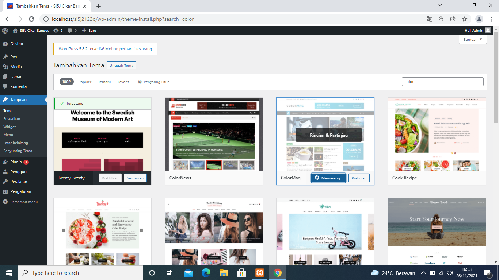
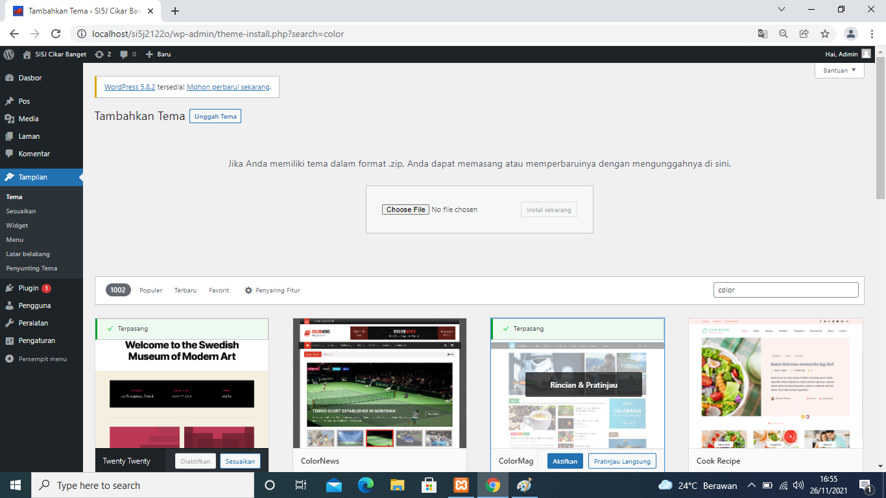
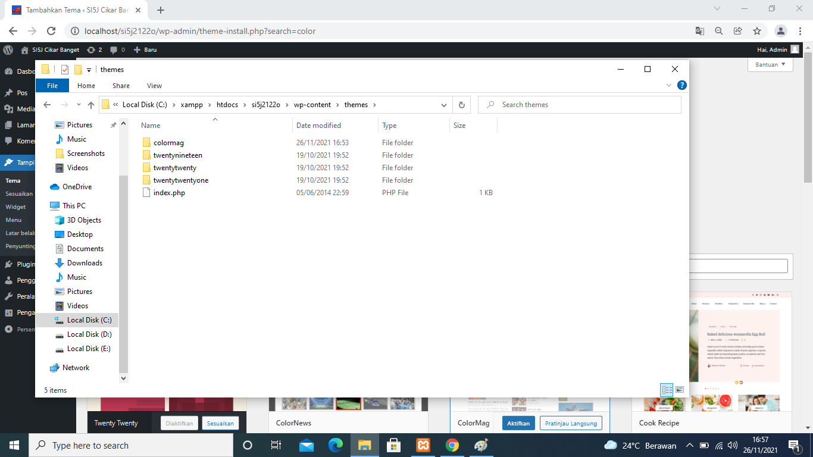

NIM: 1922500055
Nama: Adri Firmansyah
Kelompok: SI5J
Hasil atau kesimpulan dari pertemuan 5 adalah:
- materi pertemuan ke 5 merupakan materi uts
- pada pertemuan 5 mebahas tampilan berkaitan dengan tema
- cara menginstal tema secara online dengan menggunakan tema yang sudah disediakan disediakan di halaman wordpress
- cara menginstal tema dengan semi online menggunakan mengupload file zip
- cara menginstal tema dengan cara yang sudah di download ditambahkan di wp-conten
- menggantikan dan mengubah tema
- membahas tentang widget
- mengedit dan menambahkan widget
-
gambar:


